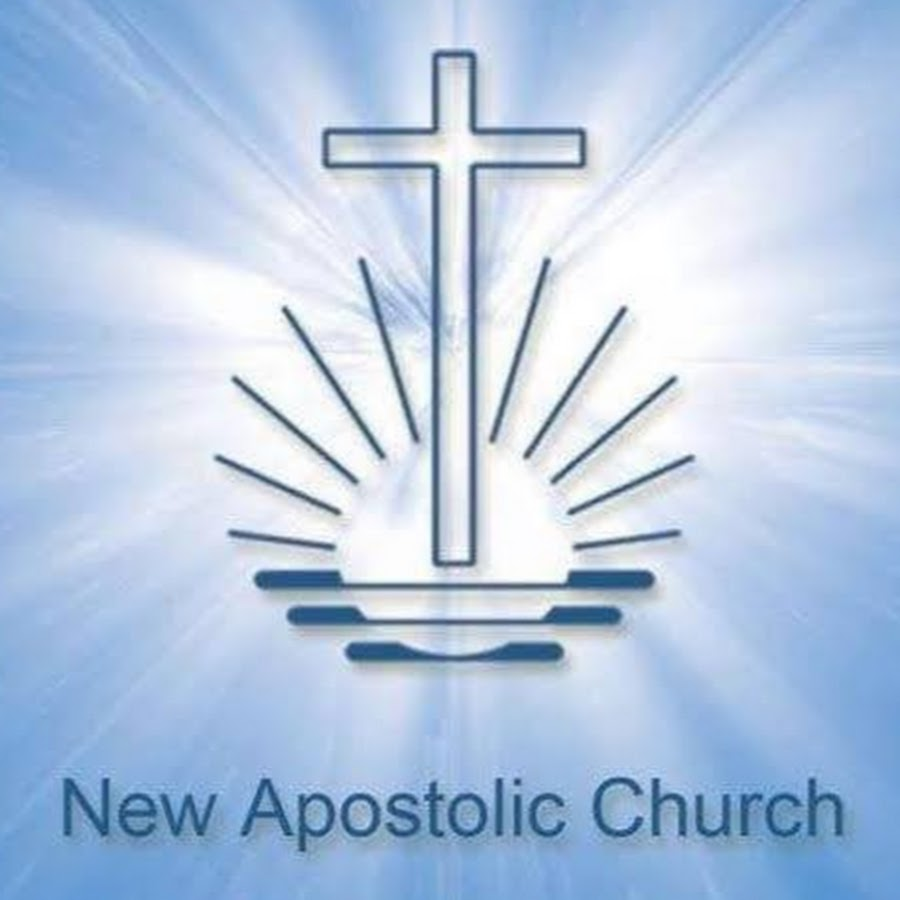

To capture the spirit of Pentecost, hundreds of thousands of members of the New Apostolic Church will be gathering this coming Sunday in one large congregation. The international Church leader, Chief Apostle Willhem Leber will be conducting the traditional central divine service in German, which will be broadcast throughout the world.
Please contact us for more information about Pentocost devine service 2022.
new@apostolicchurch.org
New apostolic church Pentocost service 2022.
What does the New Apostolic Church logo mean? Image result for new apostolic church emblem history " Together, the Cross, the rising sun, and the waves of the sea, illustrate the trinity of God -- the Father, the Son and the Holy Ghost (Holy Spirit). Separately they are this: The Cross - symbolizes the sacrifice of Jesus for our Salvation

New apostolic church Pentocost divine service 2022.
22nd ~ 23rd May 2022 | German.
See the past pentecost services
Takea look at the past two pentecost devine sevices which took place in Zambia and South Africa.
2017
NAC pencost service, Lusaka, Zambia.
2010
NAC pencost service, Lusaka, South Africa.